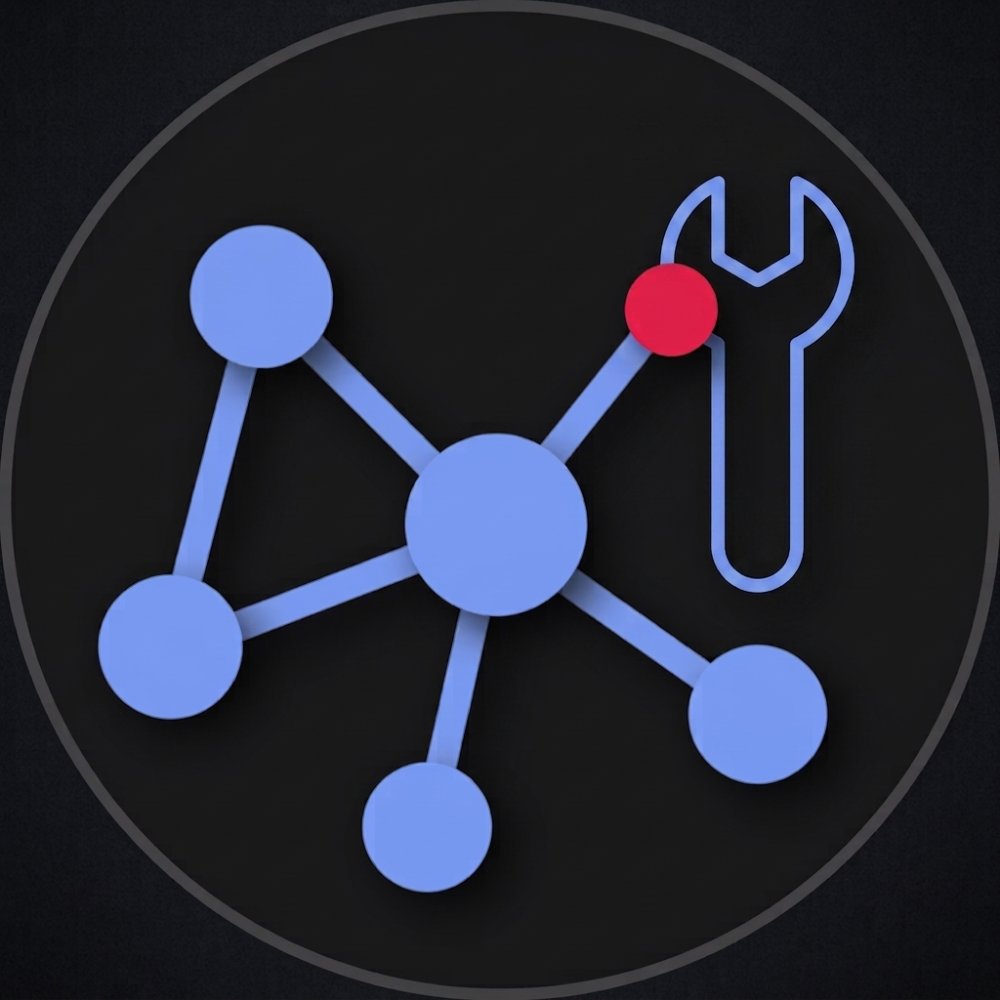

Pivotick Graph Transformer
Turn security data into a graph, without touching Pivotick
Format converters that turn third-party graph/data formats — MISP today, STIX/VirusTotal Graph/
AIL-framework planned — into the exact { nodes, edges } shape the
Pivotick
graph visualization library expects. No npm package, no build step for the library itself — it's added
as a git submodule and imported by relative path, straight into whatever Pivotick app already renders
it.
Getting started
Installation, and how to wire a converter's output into your own Pivotick app.
MISP concepts
How each MISP concept — Event, Object, Attribute, Tag, Galaxy, Sighting — becomes a graph, with a live preview for each.
Demo
A full, real Pivotick instance rendering actual MISP export data — pick any fixture, toggle dark/light.
GitHub
Source code, issues, and the full README.